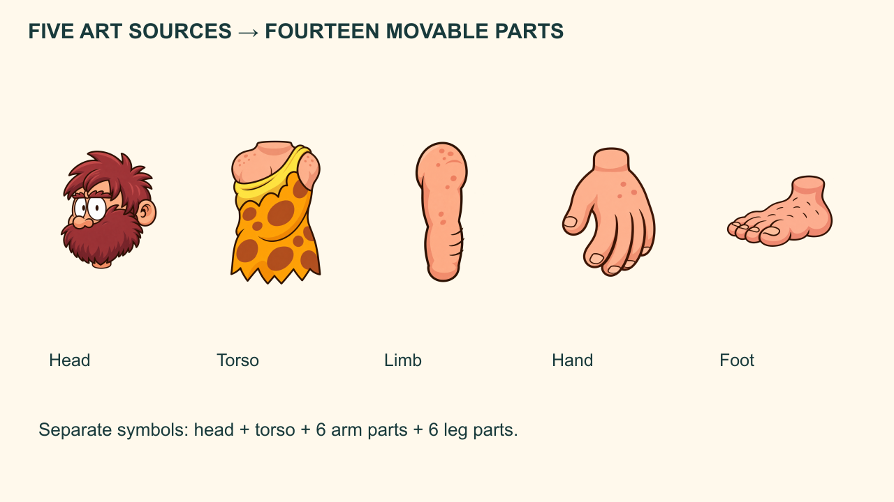
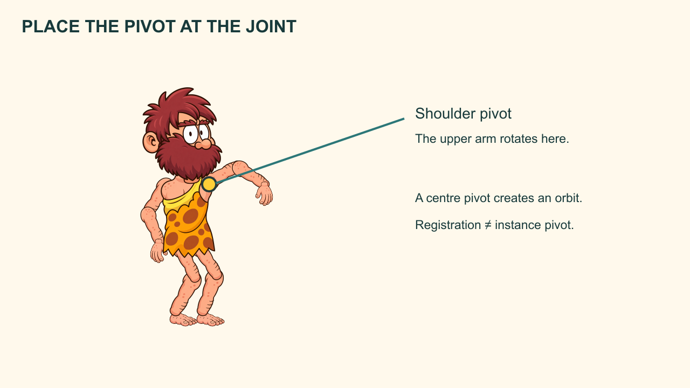
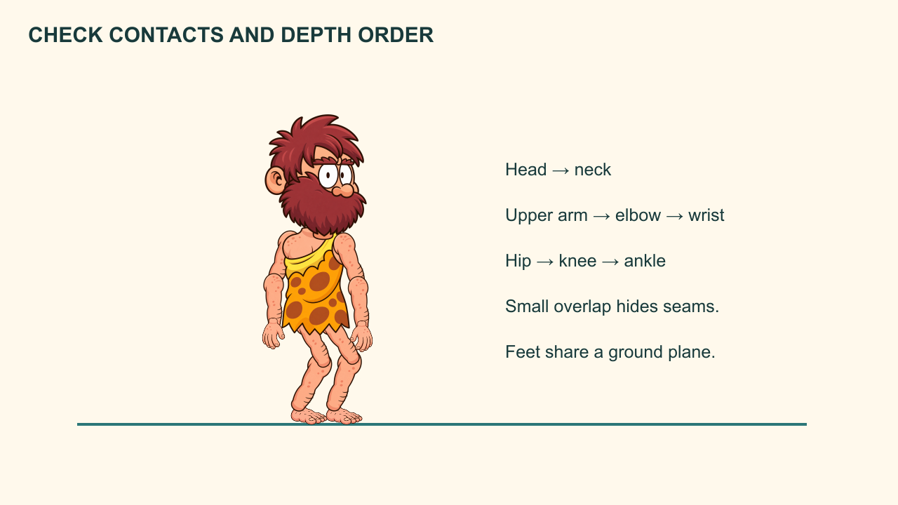

Three full-body acting studies: balanced, thinking and proud.
The Caveman and the Third Stone
Assemble an articulated character and demonstrate intentional joint movement.
Workbook 2 of 8 · two provisional sessions
My supports
Turn on any help you want. Your teacher may have set some for you. They change how the guide helps, not what is assessed.
Continue the same film
Open your selected production FLA from Workbook 01, then File → Save As → Caveman_02_character.fla. Carry forward all three Scenes and the entire Library. Keep repair/director copies separate, then return to the chosen production version. Do not begin a fresh blank project.
Your production job
Assemble an articulated character and demonstrate intentional joint movement.
Keep: Caveman_02_character.fla + neutral, thinking and proud pose images
Notes and checked stages stay in this browser when storage is available. They are not submitted, graded or shared with school apps. Read aloud uses the browser voice; teacher recordings have not been supplied.
Restore uses the JSON recovery file from this workbook. The readable text file is for review only. Download before changing device. Keep personal information out of practice notes.
How animators work
Block the meaning, test the action, refine the transition and keep a revision trail. A smooth result still needs readable intention, believable contact and a clear delivery.
Understand before you move
A clear silhouette communicates action before details. A joint pivot controls how a body part rotates.
A flattened PNG is a picture, not an articulated rig. Fourteen separate Graphic symbols allow posing. The supplied art uses five original component drawings, reused for separate arm and leg symbols. Reusing an image does not mean the symbol definitions are the same. Parenting is optional for this core manual-posing route.
Predict the result of today’s main action, then test that prediction in Animate.
Evidence of understanding
We look for the finished action, an observed repair and a brief explanation using your own timeline.
Independent director condition: Pose the Caveman carrying the stone close to his chest. Preserve balance, clear hands and a grounded foot.
Defence: Show a joint pivot, explain why it belongs there, and identify one silhouette improvement.
Support settings help access the same task. They do not lower the success criteria. School outcome/assessment registration remains for the teacher to confirm.
Session 1 · Lesson 1
Build and understand
Provisional 70-minute session: a short explanation, four guided stages, then a check. Actual classroom timing needs a cold run.
TODAYAssemble an articulated character and demonstrate intentional joint movement.
01
Choose and inspect the construction route
IN SHORTYou can identify the separate pieces and explain which picture is only a reference.
READ ALOUD
DOCUMENT: Caveman story · Workbook 02 · main Scene or named action as stated below SELECT: Character artwork folder or the prepared character FLA. TOOLS / ROUTE: File → Import → Import to Library; Window → Library.
Inspect the reference, head, torso, limb, hand and foot artwork. The original seated caveman_base.png is reserved for the counting close-up; it is not a walking body.
Choose the cutout route with supplied parts or draw your own matching parts with Brush/Pencil and fills. Both routes must create movable joints and the same story actions.
Use Far and Near to mean farther from and nearer to the viewer. Keep these names throughout the file.
STEP CHECKLIST
GLOSSARY
cutout animation: Animation using separately movable pieces.
silhouette: The readable outer shape of a pose.

Five original component artworks are reused in fourteen separate movable part definitions.
WHYConstruction choices affect what can move. Naming prevents the far and near limbs swapping identities halfway through a cycle.
CHECKYou can identify the separate pieces and explain which picture is only a reference.
FIXIf you imported a single full-body image, retain it on a locked reference layer and build separate movable parts above it.
WORKED EXAMPLE · DIFFERENT OBJECTA paper bird needs a separate wing if the wing must flap independently.
STRETCH (AFTER THE CHECK PASSES)Draw an alternate brow or hair tuft only if it can be placed without duplicating baked facial features.
Method basis: A1 · A2. Values and sequence are authored for this project.
02
Create fourteen independent Graphic definitions
IN SHORTFourteen named Graphic definitions and fourteen part layers exist; selecting an arm does not select the whole Caveman.
READ ALOUD
DOCUMENT: Caveman story · Workbook 02 · main Scene or named action as stated below SELECT: One body part at a time; no background selected. TOOLS / ROUTE: Modify → Convert to Symbol (F8); Window → Library → Duplicate.
Create Head and Torso. Create UpperArm_Far, Forearm_Far, Hand_Far, Thigh_Far, Shin_Far and Foot_Far; repeat the six names with _Near.
Use Graphic type. Duplicate a Library symbol before changing its internal artwork for another role. Give each stage instance its own layer of the same name.
When reusing the limb drawing, scale it inside each definition to suit upper arm, forearm, thigh or shin. Do not stretch the full character to fake bending.
STEP CHECKLIST
GLOSSARY
definition: The reusable master stored in the Library.
instance: A placed use of a Library definition.
WHYSeparate definitions let you revise one part without unintentionally replacing every limb.
CHECKFourteen named Graphic definitions and fourteen part layers exist; selecting an arm does not select the whole Caveman.
FIXIf several pieces edit together, exit symbol editing and check whether you reused one definition. Duplicate and replace the appropriate instance.
WORKED EXAMPLE · DIFFERENT OBJECTFour wheel instances can share one wheel definition; a bent wheel needs a separate definition if only it should change.
STRETCH (AFTER THE CHECK PASSES)Explain a situation where shared definitions are useful and one where they are dangerous.
Method basis: A1 · A2. Values and sequence are authored for this project.
03
Place pivots at the actual joints
IN SHORTThe test rotation leaves the joint attached. You can point to the pivot on the selected instance.
READ ALOUD
DOCUMENT: Caveman story · Workbook 02 · main Scene or named action as stated below SELECT: An individual part instance with Free Transform (Q). TOOLS / ROUTE: Free Transform → move the small white transformation point.
For each upper arm and thigh, move the transformation point to the shoulder or hip. Put the forearm pivot at the elbow, shin pivot at the knee, hand pivot at the wrist and foot pivot at the ankle.
Rotate a small amount, then undo. The joined end should remain in place. Test in both directions.
Distinguish the movable instance pivot from the symbol registration origin and from transparent PNG margins. Judge the joint by visible anatomy.
STEP CHECKLIST
GLOSSARY
pivot: The transformation point used for an instance rotation.
registration: The symbol’s internal coordinate origin.

Joint-pivot mechanism diagram. The yellow point marks the shoulder; this is not a simulated Animate interface.
WHYA centre pivot makes an arm orbit the shoulder. A joint pivot makes it rotate from the shoulder.
CHECKThe test rotation leaves the joint attached. You can point to the pivot on the selected instance.
FIXIf the part swings away, undo and move the white point to the joint. Do not repair a pivot error by dragging the whole body after every rotation.
WORKED EXAMPLE · DIFFERENT OBJECTA door rotates from its hinge, not from the middle of the door panel.
STRETCH (AFTER THE CHECK PASSES)Compare a hand waving from its wrist with an upper arm swinging from its shoulder.
Method basis: A1 · A2. Values and sequence are authored for this project.
04
Assemble a neutral pose in depth order
IN SHORTThe neutral character has attached joints, a consistent head size and no floating feet.
READ ALOUD
DOCUMENT: Caveman story · Workbook 02 · main Scene or named action as stated below SELECT: The fourteen part layers at frame 1. TOOLS / ROUTE: Timeline layer order; Selection and Free Transform.
Place feet on one ground line. Build shins to knees, thighs to hips, torso to hips, arms to shoulders and head to neck. Allow small joint overlaps so gaps do not open when posing.
Put far limbs behind the torso and near limbs in front where the pose requires it. Keep the head above the torso.
Select the complete assembly and convert it to a Graphic named Caveman_Action. Enter it, select the fourteen instances and use Modify → Timeline → Distribute to Layers if conversion put them on one layer; rename the resulting inner layers. Verify one part per inner layer, then inspect and restore the intended depth order; automatic distribution can follow creation order. Keep a neutral one-frame Library template.
STEP CHECKLIST
GLOSSARY
overlap: Artwork covering a small part of another piece to hide a joint seam.
depth order: Which pieces appear in front of others.

Assembly study: connected joints, deliberate depth order and a shared ground line.
WHYLayer order creates depth; overlap hides seams. A single action container lets the whole performance be staged later.
CHECKThe neutral character has attached joints, a consistent head size and no floating feet.
FIXIf a limb disappears, check visibility, layer order and scale before importing another copy. If a dark halo appears, inspect the source edge on a light background.
WORKED EXAMPLE · DIFFERENT OBJECTA puppet’s sleeve overlaps its upper arm so the seam stays hidden while it bends.
STRETCH (AFTER THE CHECK PASSES)Try a three-quarter pose without swapping the names Near and Far.
Method basis: A1 · A2. Values and sequence are authored for this project.
Session 2 · Lesson 2
Refine, repair and direct
Provisional 70-minute session: a short explanation, four guided stages, then a check. Actual classroom timing needs a cold run.
TODAYAssemble an articulated character and demonstrate intentional joint movement.
05
Test a hierarchy without depending on it
IN SHORTEither you demonstrate the child-follow test or clearly identify that your file uses manual joint placement.
READ ALOUD
DOCUMENT: Caveman story · Workbook 02 · main Scene or named action as stated below SELECT: A duplicate test symbol, not the master neutral pose. TOOLS / ROUTE: Timeline → Parenting view (Advanced Layers); or use the manual fallback.
Optional: enable the Parenting view, then parent a forearm layer to its upper arm and a hand to its forearm. Use the parent control or drag between parent circles as shown by your installed workspace.
Rotate the upper arm. Confirm whether both children follow. Undo and save the successful test separately. Parenting has not been certified by the supplied author test; stop this branch if the installed control differs.
Core fallback: leave parenting off. Rotate the upper arm, move the elbow end into place, rotate the forearm about its elbow, then place the hand at the wrist. Repeat for each designed pose.
STEP CHECKLIST
GLOSSARY
parenting: A relationship in which a child follows transformations of its parent.
inverse kinematics: A solving method that can calculate joint positions from an endpoint; ordinary parenting is not this.
WHYA hierarchy can carry child transforms, but it does not choose a good pose, bend a knee intelligently or lock a foot to the ground.
CHECKEither you demonstrate the child-follow test or clearly identify that your file uses manual joint placement.
FIXIf a joint jumps after parenting, undo. Inspect pivots and the parent assignment in the duplicate; continue manually rather than breaking the master.
WORKED EXAMPLE · DIFFERENT OBJECTMoving a desk can carry a lamp placed on it, but does not automatically keep the lamp level in an animation hierarchy.
STRETCH (AFTER THE CHECK PASSES)Build a one-chain parent test and show precisely what follows and what does not.
Method basis: A1 · A2. Values and sequence are authored for this project.
06
Design three readable acting poses
IN SHORTA viewer can identify thinking and pride before you name the poses.
READ ALOUD
DOCUMENT: Caveman story · Workbook 02 · main Scene or named action as stated below SELECT: Neutral template duplicated into a Pose_Test Graphic. TOOLS / ROUTE: Insert Keyframe at frames 1, 13 and 25; Free Transform.
At frame 1 make a balanced neutral pose. At frame 13 make a thinking pose: head toward the goal, one hand near the beard, shoulders and hips still plausible.
At frame 25 make a proud pose: open chest, a deliberate hand gesture and a stable base. Rotate parts, reposition joints and inspect the line of action.
View the poses as silhouettes or squint at the Stage. Separate the hands from the torso when their meaning must be read.
STEP CHECKLIST
GLOSSARY
line of action: A simple directional curve expressing the pose’s energy.
negative space: The clear spaces between parts of a silhouette.
WHYActing is communicated by the relationship of body parts, not just by a different mouth image.
CHECKA viewer can identify thinking and pride before you name the poses.
FIXIf two poses read the same, change the torso lean, head direction and negative space before adding small facial details.
WORKED EXAMPLE · DIFFERENT OBJECTA person offering a gift extends the object into clear space; hiding it against the chest changes the message.
STRETCH (AFTER THE CHECK PASSES)Make a doubtful proud pose by changing posture while keeping the same facial artwork.
Method basis: A1 · A2. Values and sequence are authored for this project.
07
Repair the broken-joint example
IN SHORTThe same rotation produces an attached joint after your repair.
READ ALOUD
DOCUMENT: Caveman story · Workbook 02 · main Scene or named action as stated below SELECT: A copy of Pose_Test with one intentionally misplaced pivot. TOOLS / ROUTE: Free Transform; timeline keys; Undo.
Move one elbow pivot to the centre of the forearm in the duplicate and rotate it. Capture the visible gap.
Restore the pivot at the elbow and reposition the wrist. Test the full range used by the thinking pose.
Save before/after evidence and explain the difference between the joint error and a layer-order error.
STEP CHECKLIST
GLOSSARY
diagnosis: Identifying the cause of a visible problem.
WHYA useful repair demonstrates the cause of a failure, rather than hiding it behind another part.
CHECKThe same rotation produces an attached joint after your repair.
FIXIf the gap remains, check that the pivot is correct on that keyframe instance and that the two visible joint ends overlap.
WORKED EXAMPLE · DIFFERENT OBJECTA wheel orbiting its axle is a pivot error; a wheel hidden behind the wrong panel is a depth-order error.
STRETCH (AFTER THE CHECK PASSES)Check both the most bent and most extended poses for seams.
Method basis: A1 · A2. Values and sequence are authored for this project.
08
Pose the changed carrying condition
IN SHORTThe stone appears held, hands remain attached and the pose differs intentionally from the guided examples.
READ ALOUD
DOCUMENT: Caveman story · Workbook 02 · main Scene or named action as stated below SELECT: A duplicate character action for your director version. TOOLS / ROUTE: Save As; pose keys; Stage preview.
Create a carrying pose with the stone close to the chest. Use both hands if necessary, but keep the object visible.
Keep the supporting foot under the body’s apparent weight. Show a front/three-quarter readability check at small size.
Save and reopen. Retain a neutral template and your three acting poses for the following workbooks.
STEP CHECKLIST
GLOSSARY
balance: A pose’s apparent ability to support its own weight.
WHYA changed prop condition requires new joint relationships and balance decisions.
CHECKThe stone appears held, hands remain attached and the pose differs intentionally from the guided examples.
FIXIf the stone floats, align fingers or palms around it and hold its position relative to the carrying hand.
WORKED EXAMPLE · DIFFERENT OBJECTNo worked carrying solution: use contact, silhouette and balance criteria.
STRETCH (AFTER THE CHECK PASSES)Design a one-handed carry and explain the counterbalance in the torso.
Method basis: A1 · A2. Values and sequence are authored for this project.
Before you submit
Student QA.
Evidence conversation
Keep it short and specific.
SENTENCE FRAMES
At frame ___, I chose ___ so the viewer could ___. The problem was caused by ___. I changed ___ and checked ___. Under the changed condition, I revised ___ because ___.
Figures marked Illustration are drawn, not screenshots. Step values are starting points authored for this project. Draft for teacher review; not yet classroom-piloted.